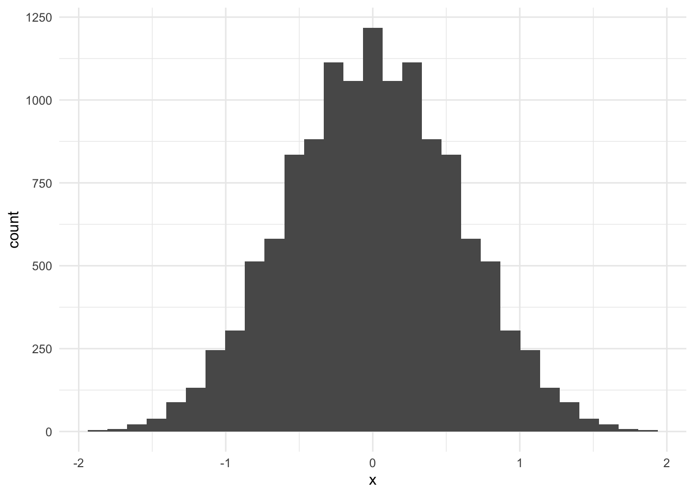
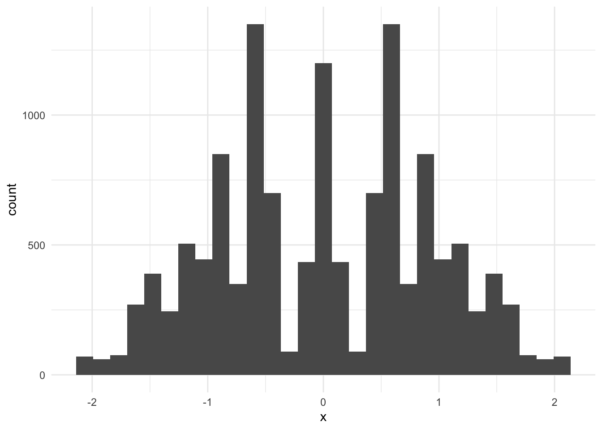
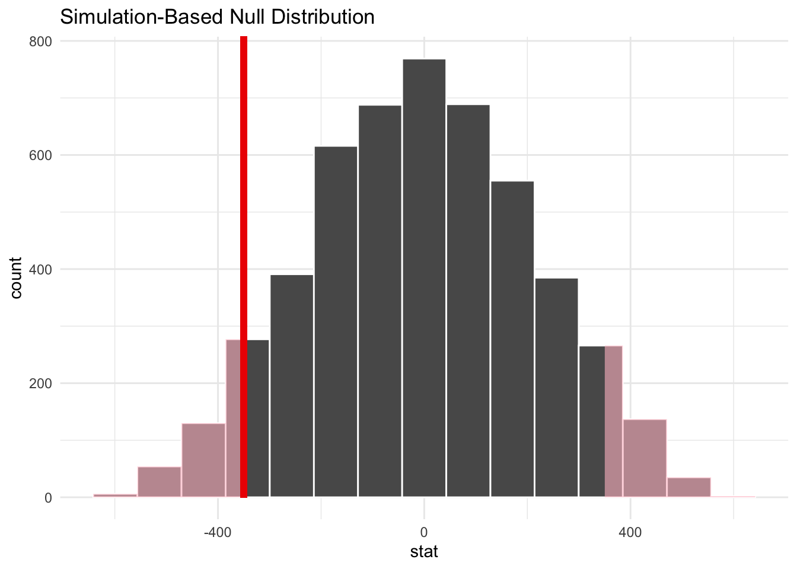
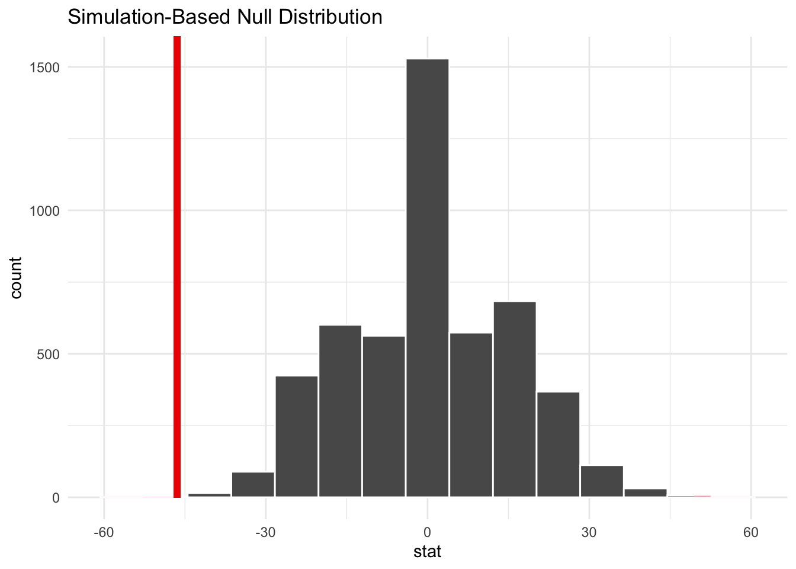
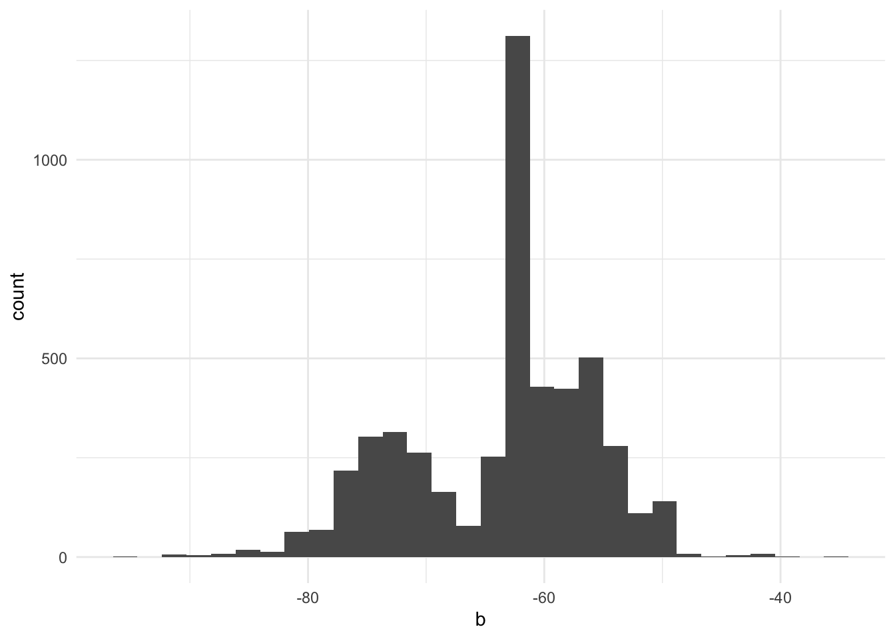
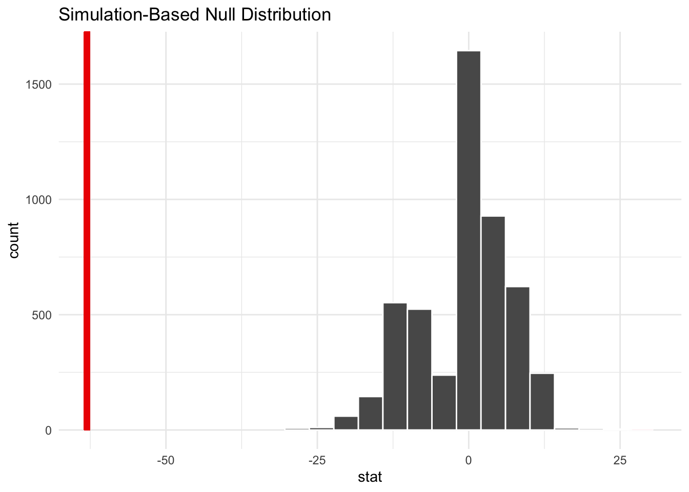

8 Nonparametric Inference
8.1 Review
Statistical inference is a procedure for making judgements about population parameters using data and assumptions.
We’ve learned about many types of tests for statistical inference. For example, consider the following tests:
- One-sample t-test to determine if a population mean is different from a key value like 0.
- Two-sample t-test to determine if two population means are different from one another.
- ANOVA to determine if multiple population means are different from other means.
- Two-sample F-tests to determine if two population variances are different from one another.
Different tests apply in different applied situations. For example, Higgins (2004) identifies at least four approaches to testing hypotheses:
- Use normal-theory methods like t-tests. Unfortunately, the assumptions of these tests may not be met.
- Transform data and use normal-theory methods like t-tests. Unfortunately, the assumptions of these tests may still not be met.
- Use tests based on other common distributions like the exponential distribution. There may be insufficient data to determine the form or the data may come from a difficult distribution with unknown parameters or characteristics.
- Use nonparametric statistics.
We use library(infer) for statistical inference in R.1
library(infer) has a more powerful workflow for other types of tests built around four verbs:
specify()is used to specify the variable or variables of interest.hypothesize()is used to declare a null hypothesis.generate()is used to generate data from the null hypothesis using parametric and nonparametric approaches.calculate()is used to calculate the distribution of statistics from data created bygenerate()to form the null hypothesis.
The four verbs can be piped together as we will see in later examples. For now, let’s focus on t_test(), which is a short cut for running t-tests in R.
8.1.1 Example 1
We simulate some data with 8 observations from \(X \sim N(\mu = 0, \sigma = 1)\) and 8 observations from \(X \sim N(\mu = 1, \sigma = 1)\).
1-Sample T-Test
Let’s start with group 1 and test if \(\mu\) is statistically significantly different than 0:
\[H_0: \mu = 0\]
\[H_a: \mu \ne 0\]
# A tibble: 1 × 7
statistic t_df p_value alternative estimate lower_ci upper_ci
<dbl> <dbl> <dbl> <chr> <dbl> <dbl> <dbl>
1 -1.21 7 0.264 two.sided -0.421 -1.24 0.398Based on the p-value and t-statistic, we have insufficient evidence to reject the null hypothesis at the \(\alpha = 0.05\) level.
Now, let’s work with group 2 using the same hypotheses.
# A tibble: 1 × 7
statistic t_df p_value alternative estimate lower_ci upper_ci
<dbl> <dbl> <dbl> <chr> <dbl> <dbl> <dbl>
1 3.01 7 0.0196 two.sided 0.954 0.205 1.70Based on the p-value and t-statistic, there is sufficient evidence to reject the null hypothesis in favor of the alternative hypothesis at the \(\alpha = 0.05\) significance level. It is likely that the population mean, \(\mu\), for group 2 is different than 0.
2-Sample T-Test
Next, let’s implement a two-sample t-test to test if the population means from group 1 and group 2 are different.
\[H_0: \mu_1 = \mu_2\]
\[H_a: \mu_1 \ne \mu_2\]
# A tibble: 1 × 7
statistic t_df p_value alternative estimate lower_ci upper_ci
<dbl> <dbl> <dbl> <chr> <dbl> <dbl> <dbl>
1 -2.93 13.9 0.0111 two.sided -1.37 -2.38 -0.367Based on the p-value and t-statistic, there is sufficient evidence to reject the null hypothesis at the \(\alpha = 0.05\) significance level. It is likely that the population means are different.
Important assumptions support the inferences in Example 1. We will unpack these assumptions later.
8.1.2 Example 2
Let’s consider a real example from Ashraf, Karlan, and Yin (2006). They created a commitment savings product for a Philippine bank called SEED (Save, Earn, Enjoy Deposits). They evaluated the effect of the commitment savings product on the level of household savings (among other outcomes) using a randomized control trial (RCT). The authors shared their data on the Harvard Dataverse. J-PAL offers a brief summary.
seed.csv contains simplified data from their analysis data.
Rows: 1,777
Columns: 5
$ group2 <chr> "treatment", "control", "treatment", "control", "control", "…
$ group3 <chr> "treatment", "marketing", "treatment", "marketing", "control…
$ totbal <dbl> 121.32, 125.19, 529.39, 101.80, 118.04, 532.69, 598.41, 548.…
$ newtotbal <dbl> 4.62, 0.00, 4139.34, 105.94, 0.00, 362.74, 2323.50, 373.13, …
$ balchange <dbl> -116.70, -125.19, 3609.95, 4.14, -118.04, -169.95, 1725.09, …1-Sample T-Test
Let’s start with a simple 1-sample T-Test to see if the population mean for change in balance after one year of the SEED accounts is statistically significantly different than zero. Our null and alternative hypotheses are
\[H_0: \mu_{\text{balance change}} = 0\]
\[H_a: \mu_{\text{balance change}} \ne 0\]
# A tibble: 1 × 7
statistic t_df p_value alternative estimate lower_ci upper_ci
<dbl> <dbl> <dbl> <chr> <dbl> <dbl> <dbl>
1 2.72 1776 0.00652 two.sided 293. 81.9 503.We reject the null hypothesis in favor of the alternative hypothesis. We conclude that the mean change in bank account balances is different than zero.
We make inferences with data and assumptions. Did our assumptions hold in this case? The assumptions for a 1-sample T-Test are
- \(x_1, x_2, ..., x_n\) is an IID random sample from a population.
- The population is normally distributed or the sample size is large enough for the Central Limit Theorem to apply.
Both assumptions are reasonable. We can assume that the sample is identically distributed because the sample was drawn from one population: clients of the Green Bank of Caraga. It also seems reasonable to assume that a household that received the commitment savings product did not somehow influence a control household’s level of savings. Thus the IID assumption is reasonable.
The study assessed more than 1,000 households, suggesting that we need not be concerned with the distribution’s normality.
The average doesn’t represent the experience of the average person. Maybe we want to run a statistical test on the median. Unfortunately, normal-theory statistics doesn’t give us a tool for this. This could be a big challenge based on key percentiles for the change in account balance:
2-Sample T-Test
Next, let’s run a 2-sample t-test to compare the means from the control and treatment group.2
\[H_0: \mu_{control} = \mu_{treatment}\]
\[H_a: \mu_{control} \ne \mu_{treatment}\]
seed |>
t_test(
formula = balchange ~ group2,
order = c("treatment", "control"),
alternative = "two-sided"
)# A tibble: 1 × 7
statistic t_df p_value alternative estimate lower_ci upper_ci
<dbl> <dbl> <dbl> <chr> <dbl> <dbl> <dbl>
1 1.56 1064. 0.118 two.sided 350. -89.0 788.There is insufficient evidence to reject the null hypothesis at the \(\alpha = 0.05\) significance level. The mean change in account balance is not statistically significantly different for the treatment and control groups.
We make inferences with data and assumptions. Did our assumptions hold in this case? The assumptions for a 2-sample T-Test are
- \(x_1, x_2, ..., x_n\) is an IID random sample from population 1. \(y_1, y_2, ..., y_n\) is an IID random sample from a population 2.
- The populations are normally distributed or the sample size is large enough for the Central Limit Theorem to apply.
- The populations have equal variances (possibly unknown).
Assumptions 1 and 2 hold, but we don’t know if assumption 3 holds. There are statistical tests for the equivalence of two population variances. In this case, we don’t even need the tests. The two samples have dramatically different variances.
# A tibble: 2 × 2
group2 `var(balchange)`
<chr> <dbl>
1 control 5514806.
2 treatment 37127545.Many applications of 2-sample t-tests incorrectly ignore assumption 3 but situations where we want to make inferences about the difference in means when population variances differ is widespread. This is known as the Behrens-Fisher problem.
8.2 Permutation Test
A combination is the exhaustive reshuffling of \(n\) objects into two groups without regard for order.
Let \(k\) be the number of objects in the first group. There are \(C(n, k) = {n \choose k} = \frac{n!}{(n - k)!k!}\) combinations.
Consider the objects A, B, C, D. Suppose we want to combine them into two groups of equal size. There are \(C(4, 2) = {4 \choose 2} = 6\) combinations.
| Group 1 | Group 2 |
|---|---|
| A, B | C, D |
| A, C | B, D |
| A, D | B, C |
| B, C | A, D |
| B, D | A, C |
| C, D | A, B |
The permutation test is typically used to compare parameters from two or more populations. The algorithm for a permutation test is as follows:
- Determine some parameter of interest for two or more populations (like the mean or median). The groups can be treatment and control groups.
- Calculate the difference in statistics for each group. This is the test statistic or observed statistic.
- Determine every possible combination of assignment of each observation to the groups (e.g. treatment and control group).
- For each combination:
- Calculate the difference in the determined statistic (e.g. mean or median) between the two groups.
- Store that difference in a vector. This vector is called the permutation distribution.
- Determine the p-value by comparing the test statistic to the permutation distribution.
For a gentle (and alpaca-themed) visualized introduction to this content, see this blog.
The permutation distribution is a vector of statistics calculated on combinations3 of the data.
If the data used in a permutation test are selected randomly or come from a designed experiment, then we can make inferences about the population. Otherwise, we can only make inferences about the sample.
8.2.1 Example 1 (Revisited)
Let’s revisit Example 1 using permutation methods. In general we use library(infer) to implement permutations tests. Here we implement the method from scratch for demonstration.
2-Sample Difference of Means
#' Implement a permutation test for means
#'
#' @param x A numeric vector
#' @param group_size The group size of group 1
#'
#' @return A permutation distribution
#'
permute_means <- function(x, group_size = 8) {
# combn() returns a matrix with group_size rows
# and a column for every combination of integers associated with x
indices <- combn(x = 1:length(x), m = group_size)
index <- 1:ncol(indices)
# 1. extract a vector of indices stored as a column in the indices matrix
# 2. extract only the observations in x included in the vector of indices
# 3. take the mean of those observations
dist <- map_dbl(
.x = index,
.f = ~ mean(x[indices[, .x]]) - mean(x[-indices[, .x]])
)
return(dist)
}permute_means() permutes the indices of the values in x to permute the values of x. In this case, with group_size = 8 the first column has indices 1, 2, 3, 4, 5, 6, 7, 8 and the last column has indices 9, 10, 11, 12, 13, 14, 15, 16. The remaining columns express every possible permutation of the values 1:16 into two groups of size 8.
# create the permutation distribution
permutation_dist <- permute_means(sim_data$x, 8)
# visualize the permutation distribution
tibble(x = permutation_dist) |>
ggplot(aes(x)) +
geom_histogram()`stat_bin()` using `bins = 30`. Pick better value with `binwidth`.
# calculate the test statistic
D <- mean(sim_data[sim_data$group == "1", ]$x) -
mean(sim_data[sim_data$group == "2", ]$x)
# calculate a p-value
mean(D > permutation_dist)[1] 0.006915307The p-value is very small. There is sufficient evidence to reject the null hypothesis at the \(\alpha = 0.05\) level. It is likely that the population means of the two samples are different.
2-Sample Difference of Medians
#' Implement a permutation test for medians
#'
#' @param x A numeric vector
#' @param group_size The group size of group 1
#'
#' @return A permutation distribution
#'
permute_medians <- function(x, group_size = 8) {
indices <- combn(1:length(x), group_size)
index <- 1:ncol(indices)
dist <- map_dbl(
.x = index,
.f = ~ median(x[indices[, .x]]) - median(x[-indices[, .x]])
)
return(dist)
}
# calculate the permutation distribution
permutation_dist <- permute_medians(sim_data$x, 8)
# visualize the permutation distribution
tibble(x = permutation_dist) |>
ggplot(aes(x)) +
geom_histogram()`stat_bin()` using `bins = 30`. Pick better value with `binwidth`.
# calculate the test statistic
D <- median(sim_data[sim_data$group == "1", ]$x) -
median(sim_data[sim_data$group == "2", ]$x)
# calculate the p-value
mean(D > permutation_dist)[1] 0.02206682The p-value is small. There is sufficient evidence to reject the null hypothesis at the \(\alpha = 0.05\) level. It is likely that the population medians (location parameters) of the two samples are different.
8.2.2 Example 2 (Revisited)
Let \(n\) be the number of observations in the data and \(k\) be the number of observations in the larger group. Then there are \({n \choose k} = \frac{n!}{k!(n - k)!}\) combinations of the data. This can be computationally very expensive.
Consider the data from example 2, which contains 1,777 observations. That’s 935 observations in the control group and 842 observations in the treatment group.
Fortunately, sampling permutations can give a decent approximation of the full permutation test.
2-Sample Difference in Means
We will now use library(infer) to calculate the observed statistic, generate the null distribution, and calculate the p-value.
Recall our null and alternative hypotheses.
\[H_0: \mu_{control} = \mu_{treatment}\]
\[H_a: \mu_{control} \ne \mu_{treatment}\]
# calculate the test statistic
point_estimate <- seed |>
specify(balchange ~ group2) |>
calculate(stat = "diff in means", order = c("control", "treatment"))
# generate the permutation distribution
perm_dist <- seed |>
specify(balchange ~ group2) |>
hypothesize(null = "independence") |>
generate(reps = 5000, type = "permute") |>
calculate(stat = "diff in means", order = c("control", "treatment"))
# visualize the p-value
perm_dist |>
visualize() +
shade_p_value(obs_stat = point_estimate, direction = "two-sided")
# calculate the p-value
perm_dist |>
get_p_value(obs_stat = point_estimate, direction = "two-sided")# A tibble: 1 × 1
p_value
<dbl>
1 0.109Once again, there is insufficient evidence to reject the null hypothesis at the \(\alpha = 0.05\) significance level. The mean change in account balance is not statistically significantly different for the treatment and control groups.
2-Sample Difference in Medians
Using normal-theory statistics, we don’t have clear strategies for statistical tests about the median. This is simple with nonparametric statistics.
# calculate the test statistic
point_estimate <- seed |>
specify(balchange ~ group2) |>
calculate(stat = "diff in medians", order = c("control", "treatment"))
# generate the permutation distribution
perm_dist <- seed |>
specify(balchange ~ group2) |>
hypothesize(null = "independence") |>
generate(reps = 5000, type = "permute") |>
calculate(stat = "diff in medians", order = c("control", "treatment"))
# visualize the p-value
perm_dist |>
visualize() +
shade_p_value(obs_stat = point_estimate, direction = "two-sided")
# calculate the p-value
perm_dist |>
get_p_value(obs_stat = point_estimate, direction = "two-sided")# A tibble: 1 × 1
p_value
<dbl>
1 0.0012We have sufficient evidence to reject the null hypothesis in favor if the alternative hypothesis at the \(\alpha = 0.05\) level. It is likely that the population median for group 1 is different than the population median for group 2.
Interestingly, the median change for the treatment group is slightly less negative than the control group.
8.2.3 Other techniques
Statistical tests are often selected because of their coverage probabilities and power.
Coverage probability is how close the stated level of confidence is to the actual level of confidence.5
For example, a given statistical test, sampling procedure, and population may generate confidence intervals that contain the true parameter of interest 93% of the time for a 95% confidence interval.
Power is the probability of rejecting \(H_0\) if it is false.
We want tests with correct coverage probabilities and high statistical power. If the assumptions are met then parametric tests often have more power than nonparametric tests. The power advantage can often flip when assumptions start failing.
Some nonparametric tests, which are often variations on the permutation test, have more power than the permutation test. Often, the Wilcoxon Rank Sum test, which is uses ranks instead of values, has higher power. Another test to explore is the Kruskal-Wallis test.
8.3 Nonparametric Bootstrap
We will investigate one more technique for density estimation focused on estimating sampling distributions.
The nonparametric bootstrap sample is a random sample with replacement.
A sampling distribution of a statistic is the distribution we would observe if a statistic was calculated on many different samples from the same population distribution.
Sampling distributions are fundamental to statistics. We frequently use the normal distribution or Student’s t distribution to make inferences about population means and population regression coefficients.
Given a sampling procedure and a population, the target parameter is in the confidence interval X% of the time over many random samples.6
The idea of repeated sampling is fundamental to sampling distributions, confidence intervals, and statistical inference in frequentist statistics. The nonparametric bootstrap leverages the idea of repeated sampling to allow for statistical inference under a minimal number of assumptions. This makes it possible to perform inference:
- When a known sampling distribution for a statistic isn’t available
- When the sample is too small to apply the central limit theorem
8.3.1 Basic Bootstrap
Suppose we are interested in an unknown parameter \(\theta\).
- Compute \(\hat\theta\) from the original data.
- Take \(B\) bootstrap samples of size \(n\) from the original data.
- Calculate \(\hat\theta_{b,i}\) on each bootstrap sample.
The vector \(\hat{\vec\theta_b}\) is the bootstrap distribution and it has multiple uses. Importantly, it is a nonparametric estimate of the sampling distribution of \(\hat\theta\).
8.3.2 Example
B <- 5000
b <- vector(mode = "numeric", length = B)
for (i in seq_along(b)) {
x_boot <- sample(seed$balchange, replace = TRUE)
b[i] <- median(x_boot)
}
tibble(b) |>
ggplot(aes(b)) +
geom_histogram()`stat_bin()` using `bins = 30`. Pick better value with `binwidth`.
We can use this permutation distribution to calculate bias (Section 8.3.3), standard errors (Section 8.3.4), and confidence intervals (Section 8.3.6).
8.3.3 Bias
Sometimes estimators of population parameters are biased.7 Bootstrapping can be used to estimate the bias in an estimator.
Let \(\theta\) be the parameter of interest and \(\hat\theta\) be an estimator. \(\hat\theta\) is unbiased if \(E[\hat\theta] = \theta\).
Accordingly, \(bias(\hat\theta) = E[\hat\theta] - \theta\).
\(E[\hat\theta]\) is just the sample mean of the sampling distribution.
\[ \hat{bias}(\hat\theta) = \bar{\hat{\theta^*}} - \hat\theta \]
where \(\bar{\hat\theta^*} = \frac{1}{b} \sum_{b = 1}^B \hat\theta_b\).
Basically, to estimate bias we subtract our estimate from the mean of the sampling distribution, which is our bootstrap distribution. This estimate of bias can be used to correct for bias.
If \(\frac{|bias|}{se} \le 0.25\), then it is likely unnecessary to correct for bias (Rizzo 2008). We will next see how to estimate \(se\).
8.3.4 Standard errors
Suppose we want to estimate the standard error of an estimator \(\hat\theta\). To do this, simply take the standard deviation of the bootstrap replicates.
\[ \hat{se}(\hat\theta^*) = \sqrt{\frac{1}{B-1} \sum_{b = 1}^B \left(\hat\theta_b - \bar{\hat\theta^*}\right)^2} \]
where \(\bar{\hat\theta^*} = \frac{1}{b} \sum_{b = 1}^B \hat\theta_b\).
Historically, the bootstrap was used to estimate the standard errors of estimates. The jackknife, another resampling method, can be used to estimate bias and standard errors. We won’t focus on this. Instead, we will estimate confidence intervals (Chernick and LaBudde 2011).
8.3.5 Example
First, let’s repeat the SEED example from above using the boot() function. boot() expects a custom function with the argument x for the data and the argument i for the index for statistics. We useR = 5000 for B <- 5000 in the earlier example.
library(boot)
seed_bootstrap <- boot(
data = seed$balchange,
statistic = function(x, i) median(x[i]),
R = 5000
)
seed_bootstrap
ORDINARY NONPARAMETRIC BOOTSTRAP
Call:
boot(data = seed$balchange, statistic = function(x, i) median(x[i]),
R = 5000)
Bootstrap Statistics :
original bias std. error
t1* -63.04 -0.9602388 7.817336library(boot) and boot() are useful when we want to see bias. They are also useful when we are interested in statistics not included in library(infer). Otherwise, we will use library(infer).
8.3.6 Confidence intervals
Under certain assumptions it is simple to construct confidence intervals for parameters like the population mean.
There are several ways to calculate confidence intervals using bootstrapping:
- Percentile method
- BCA
- t-pivot
Approach three doesn’t always work but probably has the most desirable properties. Approach two is a suitable backup. Approach one often has the worst properties, but is simple and will be sufficient in many applications.
Percentile Method
For each bootstrap sample indexed by \(b = 1, ..., B\),
- Compute \(\hat\theta\) from the original data.
- Take \(B\) bootstrap samples of size \(n\) from the data.
- Compute \(\hat\theta_b\) for each bootstrap sample.
- For \(\alpha = 0.05\), find the 2.5th and 97.th percentiles of \(\hat{\vec\theta}\).
8.3.7 Example
point_estimate <- seed |>
specify(response = balchange) |>
calculate(stat = "median")
bootstrap_distribution |>
visualize() +
shade_p_value(obs_stat = point_estimate, direction = "two-sided")
Warning: Please be cautious in reporting a p-value of 0. This result is an
approximation based on the number of `reps` chosen in the `generate()` step.
See `?get_p_value()` for more information.# A tibble: 1 × 1
p_value
<dbl>
1 0bootstrap_distribution |>
get_confidence_interval(
point_estimate = point_estimate,
level = 0.95,
type = "se"
)# A tibble: 1 × 2
lower_ci upper_ci
<dbl> <dbl>
1 -78.2 -47.8The confidence intervals are comparable. We’re good to go.
Students can take multiple statistics classes and never learn how to calculate a 95% confidence interval for a median. It’s simple with bootstrapping.
In this case, it’s striking that the balance for the median SEED account declined over the period and there is sufficient evidence that the median is statistically significantly different than $0. In fact, it’s negative!
8.4 More Methods
M-Estimation and quantile regression are two nonparametric techniques that we will not discuss that are common public policy analysis.
M-Estimation is useful for estimating conditional means in the presence of outliers. Quantile regression is useful for estimating conditional quantiles like the conditional median.
Base R has excellent tools for statistical inference.
library(infer)is useful because it plays well withlibrary(tidyverse). We can just uset_test()for a one-sample t-test.↩︎The RCT actually contains a treatment group, a control group that received marketing materials, and a proper control group. In this case, I’ve lumped the marketing group in with the treatment group.↩︎
A permutation is the exhaustive reshuffling of \(n\) objects into \(m\) groups with regard for order. We should probably call the permutation test the combination test. Combinations are the exhaustive reshuffling of \(n\) objects into \(m\) groups without regard for order. Using permutations generates the same results as combinations but takes much longer because many of the configurations are duplicated.↩︎
The permutation test is considered an exact test because the null model will never test more as significant more than the \(\alpha\) level of the test.↩︎
Brown, Cai, and DasGupta (2001) explores the coverage probabilities of different techniques for interval estimation for a binomial proportion. Reading this paper made me question everything I knew about confidence intervals.↩︎
Confidence intervals are about a process. There is a distinct difference between confidence and probabilities. It is incorrect to say, “the true parameter is in the interval X% of the time.” This is what a credible interval is and we will learn more about credible intervals when we learn Bayesian statistics.↩︎
Recall that \(\bar{X}\) is an unbiased estimator of the population mean \(\mu\). On the other hand, \(\hat\sigma^2\) is a biased estimator of variance \(\sigma^2\).↩︎